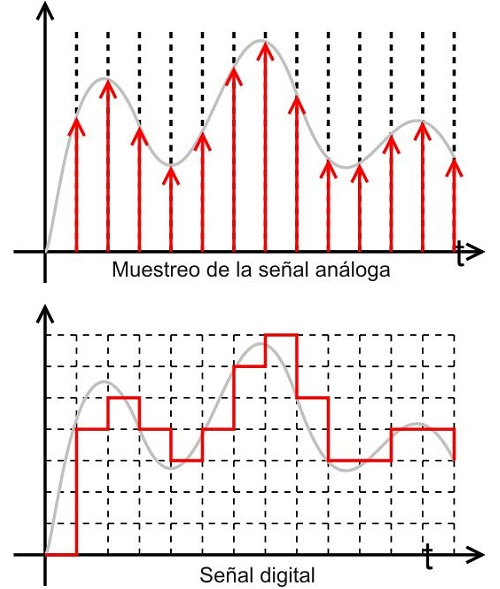

Signals and Systems Analysis
The rapid growth of data generation and the advancement of artificial intelligence have made information analysis an essential skill for contemporary engineers. Advanced concepts such as spectral analysis, noise filtering, and the use of difference equations for time-series modeling are increasingly relevant in modern industry. In this course, students will learn from the fundamentals to refine data through tools such as the Fourier transform, using theoretical and practical approaches supported by open-source software like Python.
Learning Objectives
- Develop essential critical skills for working with complex numbers.
- Understand the concept of continuous and discrete time, and the relationship between both domains.
- Design analog and digital filters to remove high- and low-frequency noise.
- Use the Laplace transform to solve continuous-time systems.
Course Outline
-
Topic 1: Complex Numbers and Special Functions
- Complex variable
- Continuous and discrete periodic functions
- Unit step function
- Unit impulse function
- Complex exponential functions
- System properties
- Definition of continuous-time systems
- Step and impulse responses
- ZIR and ZSR (mass–spring example)
- Fourier series: definition and properties
- Fourier transform: definition and properties
- Discrete-time signals and systems
- Discrete-time Fourier transform
- Nyquist theorem
- Difference equations
- Noise concepts
- Digital FIR filtering
- Passband, transition band, and stopband
- Definition and properties
- Solving continuous-time systems
- Relation to the Fourier transform
Topic 2: Continuous-Time Systems
Topic 3: Fourier Series and Transforms
Topic 4: Discrete-Time Signals and Transforms
Topic 5: Spectral Analysis
Topic 6: Laplace Transform

Integrating artificial intelligence tools powered by GPU acceleration significantly enhances the learning experience in this course, enabling real-time signal simulations, dynamic Fourier and Laplace visualizations, intelligent tutors that detect conceptual gaps, automatic signal generation, and advanced spectral analysis. By leveraging GPU computing within the campus, students can experiment with real-world data, train deep learning models for noise reduction or signal classification, design interactive digital filters, and explore complex phenomena such as aliasing, noise behavior, and system dynamics with immediate feedback. This modern approach bridges theoretical knowledge with industry-level computational practices, fostering a more intuitive, practical, and immersive understanding of signals and systems.
Instructor

Edgar Salazar, Ph.D.
Head of Electromechanical Engineering Department
Research Professor